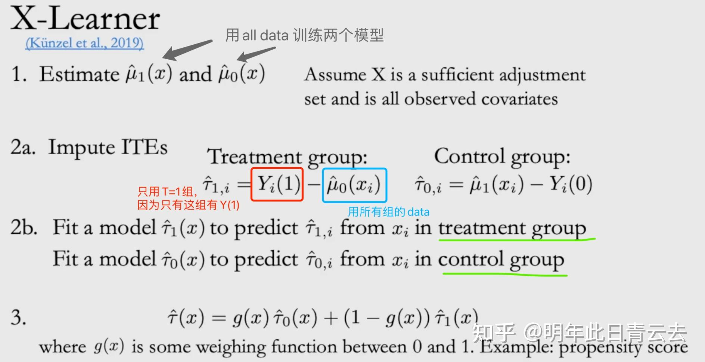

4 模型
4.1 meta-learner
4.1.1 Slearner
s 顾名思义：single model，就是一个模型都搞定
这个模型最简单，直接把treatment作为特征放进模型来预测。首先我们把 T 作为特征一起放进机器学习模型的特征， Y 是目标，然后训练一个有监督的模型 \(\mu(x)=E[Y \mid X=x, T=t]\) 。然后我们改变 T 的值，就可以得到两个不同的结果，再一相减就好了：
\[\hat{\tau}(x)=\hat{\mu}(x, T=1)-\hat{\mu}(x, T=0)\]
 优点：简单
优点：简单
缺点： - 1. 本质上还是不是对 uplift 直接进行建模，因此从效果上来说还是有提升空间。 - 2. S-Learner 倾向于将干预效果趋近于0，尤其是特征的维度非常大的时候，模型在训练的过程中极容易忽略这个干预变量。同时模型中正则化的引入，也会带来干预变量的效果稀释，正则化越强，该问题就会越大。
代码
4.1.2 TLearner
T 顾名思义：two model 需要用俩模型（可以是任何的response模型）
对于 treatment 组的样本和 control 组的样本分别独立训练一个响应模型 \(\hat{\mu}_1(x)\)和 \(\hat{\mu}_0(x)\) 。其中 \(\hat{\mu}_1(x)\) 用于拟合在施加干预的情况下响应目标 \(Y\) 与特征 \(X\) 的关系，即 \(\mu_1(x)=E[Y \mid W=1, X=x]\) ；而 \(\hat{\mu}_0(x)\) 用于拟合在未施加干预的情况下响应目标 \(Y\)与特征 \(X\) 的关系，即 \(\mu_0(x)=E[Y \mid W=0, X=x]\) 。
之后拿训练好的两个模型对于同一个样本 \(x\) 的预测结果做差，就得到了 uplift 结果。
最终得到的 T－Learner 表达式为 \(\hat{\tau}_T(x)=\hat{\mu}_1(x)-\hat{\mu}_0(x)\) 下面是 T－Learner 算法的示意图（参考 Causal Inference for The Brave and True 这本书，因此该图部分 notation 与上文存在差异：图中的 T 对应上文的干预 \(W\) ；图中的 M1和 M 0 对应上文的响应模型 \(\hat{\mu}_1\) 和 \(\hat{\mu}_0\) ）参考

优点：可以灵活地使用已有的机器学习方法。对干预和非干预样本分别建模，充分考虑了干预因素的影响。
缺点： - 1. T-Learner 并不是直接对 uplift 进行建模，因此对 uplift 的识别能力有限。 - 2. 考虑到其基于两个独立训练的模型进行二次处理后来对 uplift 进行预测，很容易产生两个独立模型的误差累积的问题。
4.1.3 XLearner
1．参考T-learner的思路，先对于 \(T=0\) 的control组和 \(T=1\) 的treatment组分别学习一个有监督的模型。 
\[ \begin{aligned} & \mu_0(x)=E\left[Y^0 \mid X=x\right] \\ & \mu_1(x)=E\left[Y^1 \mid X=x\right] \end{aligned} \]
2．然后对于 \(\mathrm{T}=1\) 的样本和 \(\mathrm{T}=0\) 的样本，分别使用 \(\mu_0(x)\) 和 \(\mu_1(x)\) 预测一个 \(\hat{\mu}^0\left(X^1\right)\) 和 \(\hat{\mu}^1\left(X^0\right)\) ，这里 \(X^0, X^1\) 分别是 \(\mathrm{T}=0, \mathrm{~T}=1\) 组 的样本，这步就是就是获得一个反事实的结果 （比如对于某一个 \(\mathrm{T}=1\) 的样本 \(X_i^1\) ，事实结果是 \(Y_i^1\) ，反事实结果是 \(\hat{\mu}^0\left(X_i^1\right)\) 。于是我们就可以对于control组和treatment组分别计算difference \(D_i^0\) 和 \(D_i^1\) ：
\[ \begin{aligned} D_i^1 & =Y_i^1-\hat{\mu}^0\left(X_i^1\right) \\ D_i^0 & =\hat{\mu}^1\left(X_i^0\right)-Y_i^0 \end{aligned} \]
3．最终对于一个新样本的CATE就是这两个的加权平均，权重是什么呢？一般是propensity score \(g(x)=P(T=1 \mid X=x)\) ，这个可以通过一个LR模型或者任何二分类模型得到得到。最后新样本的的CATE如下：\(\hat{\tau}(x)=g(x) \hat{\tau}_0(x)+(1-g(x)) \hat{\tau}_1(x)\)
 下面是 X－Learner 算法的示意图（同样参考 Causal Inference for The Brave and True 这本书，图中 notation 与上文存在差异：图中的 T 对应上文的干预 \(W\) ；图中的 M0 和 M1对应前面的模型 \(\hat{\mu}_0\) 和 \(\hat{\mu}_1\) ；图中的 MTAU0 和 MTAU1 对应前面的模型 \(\hat{\tau}_0\) 和 \(\hat{\tau}_1\) ）参考
下面是 X－Learner 算法的示意图（同样参考 Causal Inference for The Brave and True 这本书，图中 notation 与上文存在差异：图中的 T 对应上文的干预 \(W\) ；图中的 M0 和 M1对应前面的模型 \(\hat{\mu}_0\) 和 \(\hat{\mu}_1\) ；图中的 MTAU0 和 MTAU1 对应前面的模型 \(\hat{\tau}_0\) 和 \(\hat{\tau}_1\) ）参考
4.2 Tree-base
传统机器学习模型中，树模型主要的思路就是通过对特征点进行分裂，将X划分到一个又一个subspace中，这与补贴场景下，希望找到某一小部分增量很高的用户的想法几乎是完美重合。
传统分类树模型是希望通过信息理论(information theory)中的信息熵等思想，用计算信息增益的方法去解决分类问题。而在uplift tree model中，其本质也还是想要通过衡量分裂前后的变量差值去决策是否分裂节点，不过这里的这个决策差值的计算方法不再是信息增益(information gain)，而是不同的直接对增量uplift建模的计算方法，其中包括了利用分布散度对uplift建模和直接对uplift建模。
下面介绍三个Tree-Based算法，Uplift-Tree，CausalForest，CTS。
4.2.1 Casusaltree
causal tree \({ }^{+}\)（honest tree）是一种直接对目标进行建模的方法，它改进了传统决策树的优化目标和指标分桶方式，以达到最大化分桶的异质性因果效应，同时调整误差的效果。
首先，它会把数据分成训练集和估计集，一部分训练集去构造树，另外一部分估计集去估计因果效应和方差。
传统决策树将SSE作为目标函数，而causal tree的目标函数如下：
\[ F\left(S_l\right)=N_l * \tau^2\left(S_l\right)-N_l\left(\frac{\operatorname{Var}\left(S_l, 1\right)}{p}+\frac{\operatorname{Var}\left(S_l, 0\right)}{1-p}\right) \]
其中，前半部分代表实验组的treatment effect，后半部分代表实验组和对照组的 variance。
通俗理解构建causal tree的过程：首先将训练机划分为训练集和评估集两部分，用训练集训练生成一颗决策树，训练的目标函数同时考虑了实验效应（最大）和方差（最小）。然后用评估集来估计CATE作为该叶子结点的CATE，对于新样本将会用该CATE作为预测值。参考
4.2.2 CasusalForest
因果森林（Causal Forest）由 Susan Athey 和 Stefan Wager 等大牛提出（2019），本质是广义随机森林（GRF）在因果推断场景的特化应用。因果森林的核心思想在于将随机森林改造为一个专门用于估计异质性因果效应的强大工具。传统的回归树分裂准则是让数据集平均MSE最小化，因果森林是通过 uplift 增益导向的分裂准则，引导树结构主动寻找处理效应发生变化的边界，从而自适应地将样本划分为协变量和处理组／对照组都相对平衡的局部子群体（近似局部 RCT）。分裂标准表达式为：
\[ \Delta\left(C_1, C_2\right)=\frac{n_{C_1} n_{C_2}}{n_P^2}\left(\hat{\theta_{C_1}}-\hat{\theta_{C_2}}\right)^2 \]
\(P\)代表决策树父节点， \(C_1\)和\(C_2\)是分裂后的 2 个子节点，\(\theta\) 是两个子集的平均处理效应。因为两个子集中既有 \(\mathrm{T}=1\) 的样本，也有 \(\mathrm{T}=0\) 的样本，所以可以计算出平均处理效应，即平均增益。\(n\)代表各集合的样本数目。决策树分裂要求上述表达式的值最大化。
- \(\Delta\left(C_1, C_2\right)\) ：表示类别 \(C_1\) 和 \(C_2\) 之间的＂差异值＂，是整个公式要计算的核心结果。
- \(n_{C_1}\) ：类别 \(C_1\) 中的样本数量（或观测数）。
- \(n_{C_2}\) ：类别 \(C_2\) 中的样本数量（或观测数）。
- \(n_P\) ：总体（或父群体、合并群体）的总样本数量（即 \(n_P=n_{C_1}+n_{C_2}\) ，如果 \(C_1\) 和 \(C_2\) 是总体的仅有的两个子组）。
- \(\hat{\theta}_{C_1}\) ：对类别 \(C_1\) 中某个参数 \(\theta\) 的估计值（比如均值、处理效应、概率等，具体含义由研究场景决定）。
- \(\hat{\theta}_{C_2}\) ：对类别 \(C_2\) 中参数 \(\theta\) 的估计值。
公式逻辑与意义 公式的核心是组间参数差异的加权平方，权重由＂组样本量占总体的比例＂决定：
- 分子部分：\(n_{C_1} n_{C_2}\left(\hat{\theta}_{C_1}-\hat{\theta}_{C_2}\right)^2\)
- \(\left(\hat{\theta}_{C_1}-\hat{\theta}_{C_2}\right)^2\) ：直接衡量两个组的参数估计值的＂平方差＂，差越大，组间差异越显著。
- \(n_{C_1} n_{C_2}\) ：是对＂组样本量＂的加权——如果某组样本量很大，会让这部分权重更高，体现＂大样本组的差异更值得关注＂ （或更能代表群体特征）。
- 分母部分：\(n_P^2\) 对分子的 “样本量加权” 做归一化，避免因总体样本量\(n_P\)过大导致 \(Δ\)数值无限制膨胀，让结果更具可比性。
传统的回归树，叶子结点预测结果是叶子结点上样本的响应变量平均值。类似的，因果树预测的结果是，叶子结点上的平均 CATE，以发优惠券为例，叶子结点预测的结果就是该节点上发券样本的平均转化率－不发券样本的平均转化率。
因果森林对比随机森林的差异
| 差异点 | 随机森林 | 因果森林 |
|---|---|---|
| 目标 | 目标是预测一个观测值的结果 Y（分类或回归）。 分裂准则（如基尼系数、信息增益、均方误差）旨在最大化节点内结果的同质性或最小化预测误差。 |
核心目标直接是估计每个个体或相似群体（叶子节点）的处理效应 \(τ(x) = E[Y(1)-Y(0) \mid X=x]\)。 它不再直接预测 Y，而是预测 \(Y(1) - Y(0)\) 这个反事实差异。 森林中的每一棵树都旨在构建一个能将样本划分为处理效应尽可能同质的子群体（叶子节点）的结构。 |
| 分裂准则 | 传统分裂准则（如 MSE）在存在处理变量T时，会倾向于选择那些能同时很好预测Y且与T 相关的变量（即混杂因素）。但这会导致分裂后的子节点内，处理组和对照组在协变量分布上仍然不平衡（混杂未完全消除），从而污染了处理效应的估计。 | 因果森林的分裂准则专门设计用于最大化子节点间处理效应的异质性或最小化子节点内处理效应估计的方差，常用准则包括： • 基于 CATE 差异最大化：在候选分裂点，计算分裂后左右子节点的 CATE（\(τ_L\) 和 \(τ_R\)）差异 \(|τ_L - τ_R|\)，选择差异最大的变量和分裂点（驱动树寻找效应突变边界）； • 基于负梯度（梯度提升视角）：将 CATE 估计视为优化问题，用处理效应损失函数（如均方处理效应误差）的负梯度作为伪残差，指导分裂方向以减少 CATE 估计误差。 |
| 集成学习与Honest Estimation | 基于“bootstrap抽样+随机特征选择”构建多棵决策树，集成时直接对每棵树的预测结果（分类概率/回归值）取平均，无“分裂与效应估计的样本分离”设计，未针对因果效应优化无偏性。 | 1. 集成逻辑：与随机森林类似，构建数百棵“因果树”，每棵树基于随机子样本+随机特征子集训练，引入随机性以降低方差； 2. 双重样本利用（Honest Estimation）： • 训练样本（S1）：仅用于构建树结构（决定分裂规则），不参与效应计算； • 估计样本（S2）：与S1无交集（或通过Out-of-bag抽样实现），仅“落入”已训练好的树的叶子节点，用于计算该节点的效应 \(τ_{leaf}\)（处理组与对照组均值差）； 3. 核心优势： • 防过拟合：避免用同一批样本（S1）既建结构又算效应，减少噪声导致的偏差； • 无偏性：满足独立性条件时，可提供渐近无偏的CATE估计； 4. 最终预测：新样本输入所有因果树，取各树输出的 \(τ_{leaf}\) 均值（或中位数）作为最终CATE结果，集成平均提升估计稳定性。 |
4.2.3 DML
DML（double machine learning）是指一种用于因果推断的方法，它结合了现代机器学习技术与传统计量经济学方法，旨在从观测数据中准确估计因果效应。具体来说，double machine learning（DML）通过两个独立的预测步骤来实现这一目标：
第一阶段：使用机器学习模型预测结果变量 Y 和处理变量 T 关于协变量 X 的值。这一过程涉及两个模型的训练：一个是预测Y，另一个是预测T。
\[ \begin{aligned} & Y^{\prime}=f_1(X)+\varepsilon \\ & T^{\prime}=f_2(x)+\varepsilon \end{aligned} \]
第二阶段：计算第一阶段预测值与实际值的残差，即得到 Y 的残差和 T 的残差。这些残差去除了协变量X的影响。
\[ \begin{aligned} & \Delta Y=Y-Y^{\prime} \\ & \Delta T=T-T^{\prime} \end{aligned} \]
回归分析：最后，对这些残差进行线性回归，以估计处理变量 T 对结果变量 Y 的因果效应。
\[ \Delta Y=\mu(x) * \Delta T+\varepsilon \]
最终 \(\mu(x)\) 即为输出结果。 这种方法的核心在于构造＂正交化＂得分，即通过残差来消除协变量的混杂影响，从而实现无偏的因果效应估计。DML特别适用于高维数据和复杂非线性关系的情况，因为它能够利用灵活的机器学习模型来处理大量控制变量，同时保持估计的稳健性。将 DML里面的模型换成随机森林就是CausalForestDML。
4.3 深度因果模型
4.3.1 TARNET
深度因果模型的基础网络，很多后续的网络都是在此基础上拓展的.为了让神经网络学习到的表示相近，Shalit et al．（2017）提出了Treatment Agnostic Regression Network（TARNet）。它的思想很简单，神经网络整体为双头结构，然后像 multi－task一样的共享层去学习共有的信息表征 \(\phi(x)\) ，再利用该共享表征去分别学习treated组和control的outcome结果。共享层其实就会在treated和control组的信息中进行tread off，从而达到一种balanced。 简言之：TARNet前半部分用的是整个数据集，但是在后两个分支分别用的是T=0和T=1的分组数据各自训练所属的分支。
 图a是T-Learner，图b是tarnet，其中tarnet在2元treatment的loss如下：参考
\[
\underset{h, \Phi}{\arg \min } \frac{1}{N} \sum_{i=1}^N \operatorname{MSE}(Y_i\left(T_i\right), \underbrace{h\left(\Phi\left(X_i\right), T_i\right)}_{\hat{Y}_i\left(T_i\right)})+\lambda \underbrace{\mathcal{R}(h)}_{L_2}
\]
图a是T-Learner，图b是tarnet，其中tarnet在2元treatment的loss如下：参考
\[
\underset{h, \Phi}{\arg \min } \frac{1}{N} \sum_{i=1}^N \operatorname{MSE}(Y_i\left(T_i\right), \underbrace{h\left(\Phi\left(X_i\right), T_i\right)}_{\hat{Y}_i\left(T_i\right)})+\lambda \underbrace{\mathcal{R}(h)}_{L_2}
\]
def regression_loss(concat_true, concat_pred):
y_true = concat_true[:, 0]
t_true = concat_true[:, 1]
y0_pred = concat_pred[:, 0]
y1_pred = concat_pred[:, 1]
loss0 = tf.reduce_sum((1. - t_true) * tf.square(y_true - y0_pred))
loss1 = tf.reduce_sum(t_true * tf.square(y_true - y1_pred))
return loss0 + loss14.3.4 DESCN
模型整体有两部分结构组成ESN网络+Xnetwork网络

解决的问题
干预偏差问题 Treatment Bias： 即被干预Treatment组（实验组）和未干预Control 组（对照组）的分布是不同的。
样本不均衡问题 Sample Imbalance：干预的Treatment 组和未干预的Control 组样本差异大，样本不平衡。
问题根源：Treatment Bias 和 Sample Imbalance 都源于非随机的观测数据。
Treatment Bias 是因为处理分配（W）与协变量也就是特这（X）和潜在结果（Y(0), Y(1)）不独立，即存在混淆变量。
Sample Imbalance 虽然有时是策略本身导致的（如只对1%的用户发券），但在非随机环境下，这种数量上的不平衡会加剧模型学习的难度。
理论上来说，RCT实验数据是可以一定程度避免这俩问题的。 本文方法的三个假设：
一致性Consistency：\(y_i=y_i\left(w_i\right)\) ，观测到的 \(y_i\) 和 潜在的 \(y_i\left(w_i\right)\) 是一致的，即干预对结果的影响是稳定的。
可忽略性Ignorability：\(Y(1), Y(0) \perp T \mid X\) ，意思是没有其他未观察到的混淆变量存在；
重叠Overlap： \(0<\pi(x)<1\) ，即干预的施加是不确定的，存在倾向性。
ITE的基本框架
- 样本数据集定义
令观察样本为\(D=\left\{y_i, x_i, w_i\right\}_{i=1}^n\)：表示包含\(n\)个样本的数据集，每个样本包含三个核心变量： \(\mathrm{y}, \mathrm{x}, \mathrm{w}\) 分别表示效果标签、特征、是否被干预。每一个样本的 \(y_i \in\{0,1\}\) ，表示binary的 outcome；每一个样本的 \(w_i \in\{0,1\}\) 表示binary的treatment，当 \(w_i=1\) 表示有干预，当 \(w_i=0\) 表示无干预。
被干预的倾向性得分估计表示为 \(\pi(x)=P(W=1 \mid X=x)\) 。 \(T=\left\{i: w_i=1\right\}\):干预样本的集和 \(C=\left\{i: w_i=0\right\}\) ：对照组的样本集和。
2．倾向性得分（Propensity Score）
定义：\(\pi(x)=P(W=1 \mid X=x)\) ，表示在给定特征 \(x\) 的条件下，样本接受干预（ \(W=1\) ）的概率。
作用：倾向性得分是因果推断中的重要工具，常用于平衡实验组和对照组的特征分布，减少混杂偏倚（confounding bias）。
3．干预效应的核心定义
要估计干预对结果的影响，需明确两个条件期望：
干预组响应（TR）：\(\mu_1(x)=\mathbb{E}(Y \mid W=1, X=x)\)表示＂在特征为 \(x\) 且接受干预（ \(W=1\) ）的条件下，结果 \(Y\) 的期望＂（即特征为 \(x\) 的样本接受干预后的平均结果）。
对照组响应（CR）：\(\mu_0(x)=\mathbb{E}(Y \mid W=0, X=x)\)表示＂在特征为 \(x\) 且未接受干预（ \(W=0\) ）的条件下，结果 \(Y\) 的期望＂（即特征为 \(x\) 的样本未接受干预后的平均结果）。
4．个体处理效应（ITE）的估计
- ITE 的定义：\(\tau(x)=\mu_1(x)-\mu_0(x)\)表示对于特征为 \(x\) 的个体，接受干预与未接受干预的结果差异，即＂干预对该个体的净效应＂。
- 估计思路： 1．通过建模分别估计 \(\mu_1(x)\) 和 \(\mu_0(x)\) ，得到估计值 \(\hat{\mu}_1(x)\) 和\(\hat{\mu}_0(x)\)（例如用回归模型分别拟合实验组和对照组的结果与特征的关系）。
2．计算估计的 ITE：\(\hat{\tau}(x)=\hat{\mu}_1(x)-\hat{\mu}_0(x)\) ，即通过两个条件期望的估计值之差，近似个体的真实干预效应。
ESN结构
如fig1 中的a图
ESN（Entire Space Network）通过定义两个关键概率来实现全空间建模，分别是 Entire Space Treated Response（ESTR）和 Entire Space Control Response （ESCR）。其中，ESTR 表示为 \(P(Y, W=1 \mid X)\) ，即给定特征 \(X\) 时，有干预且结果为 \(Y\) 的联合概率，若 \(Y\) 表示是否转化，ESTR 就是有干预且转化的概率； ESCR 表示为 \(P(Y, W=0 \mid X)\) ，即给定特征 \(X\) 时，无干预且结果为 \(Y\) 的联合概率，若 \(Y\) 表示是否转化， ESCR 就是无干预且转化的概率。
和Two model类型的模型将实验组和对照组样本分别建模为两个模型不同，ESN受多目标模型的启发，通过共享层对不同的数据提取Embedding。然后对于每个数据计算倾向程度分Propensity Score，对实验组数据进入干预分支得到ESTR，对于对照组数据进入对照分支得到ESCR。
基于此，ESN 通过拟合 ESTR、ESCR 以及倾向性 \(\pi\) 的观测标签得到相应损失函数，分别是倾向损失 \(L_\pi\) 、ESTR损失 \(L_{ESTR}\) 和 ESCR 损失 \(L_{ESCR}\) 。其中， \(L_\pi=\frac{1}{n} \sum_i l\left(t_i, \hat{\pi}\left(x_i\right)\right)\) ，用于拟合倾向性得分； \(L_{\text {ESTR }}=\frac{1}{n} \sum_i l\left(y_i \& w_i, \hat{\mu}_1\left(x_i\right) \cdot \hat{\pi}\left(x_i\right)\right)\) ，用于拟合有干预且结果为 \(Y\) 的情况\(L_{E S C R}=\frac{1}{n} \sum_i l\left(y_i \&\left(1-w_i\right), \hat{\mu}_0\left(x_i\right) \cdot\left(1-\hat{\pi}\left(x_i\right)\right)\right)\):用于拟合无干预且结果为\(Y\)的情况
合并后得到：\(L_{E S N}=\alpha \cdot L_\pi+\beta_1 \cdot L_{E S T R}+\beta_0 \cdot L_{E S C R}\)
Xnetwork
如fig1中的图b
是基于X-learner改进得到的端到端学习方法，整体流程有点类似于将X-learner组合为一个端到端的学习方式，也存在交叉思路的设计。
通过共享层后，左右两个分支分别对干预组数据和对照组数据进行建模，中间的PTE （Pseudo Treatment Effe）得到 \(\tau^{\prime}\) 为干预带来的隐藏的效果，然后X－Network是怎么做交叉的才是其核心所在。
先定义Cross Treated Response 、 Cross Control Response 两个节点 Cross Treated Response \(\mu_1^{\prime}:=\mu_0+\tau^{\prime}\) Cross Control Response \(\mu_0^{\prime}:=\mu_1-\tau^{\prime}\) 对于 Cross Treated Response，其实是把 \(\mu_0\) 当作反事实（counterfactual）预测函数去预测（如果不干预会怎么样），然后加上 PTE Netwrok的 \(\tau^{\prime}\) 获得有干预时的respond。
对于 Cross Control Response，则是把 \(\mu_1\) 当作反事实（counterfactual）预测函数去预测 （如果干预会怎么样），然后减去 PTE Netwrok的 \(\tau^{\prime}\) 以此得到无干预时的respond。
然后Cross Treated Response、Cross Control Response 分别对T、C数据集拟合，
\[ \begin{aligned} L_{T R} & =\frac{1}{|T|} \sum_{i \in T} l\left(y_i, \hat{\mu}_1\left(x_i\right)\right), \\ L_{C R} & =\frac{1}{|C|} \sum_{i \in C} l\left(y_i, \hat{\mu}_0\left(x_i\right)\right), \\ L_{C r o s s T R} & =\frac{1}{|T|} \sum_{i \in T} l\left(y_i, \hat{\mu}_1^{\prime}\left(x_i\right)\right) \\ & =\frac{1}{|T|} \sum_{i \in T} l\left(y_i, \sigma\left(\sigma^{-1}\left(\hat{\mu}_0\left(x_i\right)\right)+\sigma^{-1}\left(\hat{\tau}^{\prime}\left(x_i\right)\right)\right),\right. \\ L_{C r o s s C R} & =\frac{1}{|C|} \sum_{i \in C} l\left(y_i, \hat{\mu}_0^{\prime}\left(x_i\right)\right) \\ & =\frac{1}{|C|} \sum_{i \in C} l\left(y_i, \sigma\left(\sigma^{-1}\left(\hat{\mu}_1\left(x_i\right)\right)-\sigma^{-1}\left(\hat{\tau}^{\prime}\left(x_i\right)\right)\right)\right. \end{aligned} \] 逐一解释每个损失的含义
1．基础损失（直接响应预测）
\[ L_{T R}=\frac{1}{|T|} \sum_{i \in T} l\left(y_i, \hat{\mu}_1\left(x_i\right)\right) \]
- 含义：
- \(T\) 是处理组（Treatment Group）样本集合，\(|T|\) 是处理组样本数量。
- \(\hat{\mu}_1\left(x_i\right)\) 是模型对处理组样本 \(x_i\) 的响应预测（即干预后的结果）。
- \(l(\cdot, \cdot)\) 是损失函数（如分类用交叉嫡、回归用 MSE），衡量预测值与真实标签 \(y_i\) 的差异。
- 作用：直接学习＂处理组特征 \(x_i \rightarrow\) 处理后结果 \(y_i\)＂的映射。
\[ L_{C R}=\frac{1}{|C|} \sum_{i \in C} l\left(y_i, \hat{\mu}_0\left(x_i\right)\right) \]
- 含义：
- \(C\) 是对照组（Control Group）样本集合，\(|C|\) 是对照组样本数量。 \(\hat{\mu}_0\left(x_i\right)\) 是模型对对照组样本 \(x_i\) 的响应预测（即未干预时的结果）。 作用：直接学习＂对照组特征 \(x_i \rightarrow\) 未干预结果 \(y_i\)＂的映射。
2．交叉损失（反事实预测）
\[ \begin{aligned} & L_{\text {CrossTR }}=\frac{1}{|T|} \sum_{i \in T} l\left(y_i, \hat{\mu}_1^{\prime}\left(x_i\right)\right) \\ & =\frac{1}{|T|} \sum_{i \in T} l\left(y_i, \sigma\left(\sigma^{-1}\left(\hat{\mu}_0\left(x_i\right)\right)+\sigma^{-1}\left(\hat{\tau}^{\prime}\left(x_i\right)\right)\right)\right) \end{aligned} \]
- 含义：
- \(\hat{\mu}_1^{\prime}\left(x_i\right)\) 是反事实预测：用对照组的预测结果 \(\hat{\mu}_0\left(x_i\right)\) 加上＂处理效应＂\(\hat{\tau}^{\prime}\left(x_i\right)\) ，模拟处理组的结果。
- \(\sigma(\cdot)\) 是激活函数（如分类用 Sigmoid，回归可能不用），\(\sigma^{-1}(\cdot)\) 是其逆函数（如 Sigmoid 逆是 Logit 变换）。
- 作用：让模型学习＂如果对照组样本 \(x_i\) 被处理，结果会怎样＂（反事实推理）。通过强制模型用 \(\hat{\mu}_0+\tau^{\prime}\) 预测处理组结果，约束处理效应 \(\tau^{\prime}\) 的合理性。
\[ \begin{aligned} & L_{\text {CrossCR }}=\frac{1}{|C|} \sum_{i \in C} l\left(y_i, \hat{\mu}_0^{\prime}\left(x_i\right)\right) \\ & =\frac{1}{|C|} \sum_{i \in C} l\left(y_i, \sigma\left(\sigma^{-1}\left(\hat{\mu}_1\left(x_i\right)\right)-\sigma^{-1}\left(\hat{\tau}^{\prime}\left(x_i\right)\right)\right)\right) \end{aligned} \]
含义：
\(\hat{\mu}_0^{\prime}\left(x_i\right)\) 是反事实预测：用处理组的预测结果 \(\hat{\mu}_1\left(x_i\right)\) 减去＂处理效应＂\(\hat{\tau}^{\prime}\left(x_i\right)\) ，模拟对照组的结果。
作用：让模型学习＂如果处理组样本 \(x_i\) 未被处理，结果会怎样＂（反事实推理）。通过 \(\hat{\mu}_1-\tau^{\prime}\) 约束处理效应 \(\tau^{\prime}\) ，确保效应的一致性。
核心逻辑：反事实约束
处理效应 \(\tau(x)\) 的定义是：\(\tau(x)=\mu_1(x)-\mu_0(x)\)（处理后结果－未处理结果）。
CrossTR／CrossCR 通过反事实假设，强制模型满足：\(\mu_1(x)=\mu_0(x)+\tau(x)\)（处理组结果 \(=\) 对照组结果 + 处理效应）
\(\mu_0(x)=\mu_1(x)-\tau(x)(\) 对照组结果 \(=\) 处理组结果 - 处理效应 \()\) －这种约束让模型学习到的处理效应 \(\tau(x)\) 更可靠，避免效应预测与直接响应预测矛盾。
总结
基础损失（ \(L_{T R}, L_{C R}\) ）：直接学习＂处理／对照组特征 \(\rightarrow\) 结果＂的映射。
交叉损失（ \(L_{\text {CrossTR }}, L_{\text {CrossCR }}\) ）：通过反事实推理，约束＂处理效应 \(\tau^{\prime \prime}\) 的合理性，让模型同时满足：
处理组结果 \(=\) 对照组结果 + 处理效应
对照组结果 \(=\) 处理组结果－处理效应
这种设计是 X－learner 的核心思想，通过反事实约束提升 \(5 \vee\) 立预测的准确性，常用于因果推断、uplift modeling 等场景。
公式中 \(\sigma^{-1}\) 表示sigmoid的逆函数，实际上 Cross Treated Response、Cross Control Response 会对 \(\tau^{\prime}\) 在 logit 层面做加减，这么做的优点有二：
1．避免数值范围截断：sigmoid 函数的输出范围固定在 \((0,1)\) 之间，若直接在概率层面对 \(\tau^{\prime}\) 进行加减，可能导致结果超出合理范围（如小于 0 或大于 1），需要额外的截断处理，这会丟失信息或引入偏差。而 logit 层面（ \(\sigma^{-1}\) 的输出）是实数域，加减操作不会受边界限制，无需截断。
2．增强小效应信号的捕捉能力：sigmoid 函数的特性是两端斜率极低（接近 0 ），中间区域斜率较高。这意味着在概率接近 0 或 1 时，纵轴（概率）的微小变化对应横轴（logit）的较大变化。通过在 logit 层面操作 \(\tau^{\prime}\) ，即使是很小的效应信号，也能通过 logit 空间的显著变化被模型捕捉，从而提升对微弱干预效果的识别能力。
ESN
整体结构如fig1中的图c DESCN就是将上面ESN（处理Treatment bias的能力）和 X－network（处理Sample imbalance的能力）结合，结构如图（c），损失函数如下：
\[
\begin{aligned}
L_{D E S C N} & =L_{E S N}+\gamma_1 \cdot L_{C r o s s T R}+\gamma_0 \cdot L_{\mathrm{CrossCR}} \\
& =\alpha \cdot L_\pi+\beta_1 \cdot L_{E S T R}+\beta_0 \cdot L_{E S C R} \\
& +\gamma_1 \cdot L_{C r o s s T R}+\gamma_0 \cdot L_{C r o s s C R}
\end{aligned}
\]
效果对比
 # 多目标多场景
# 多目标多场景